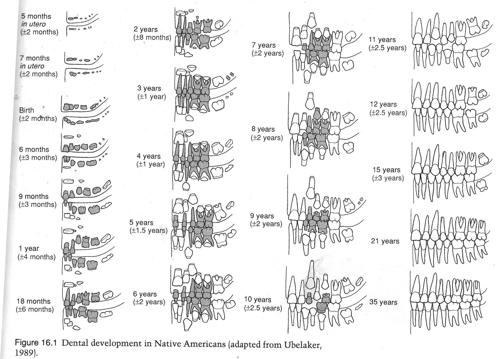
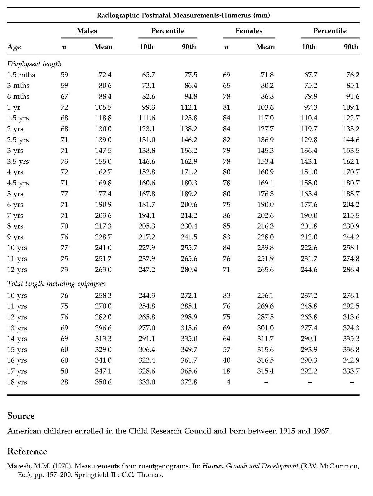
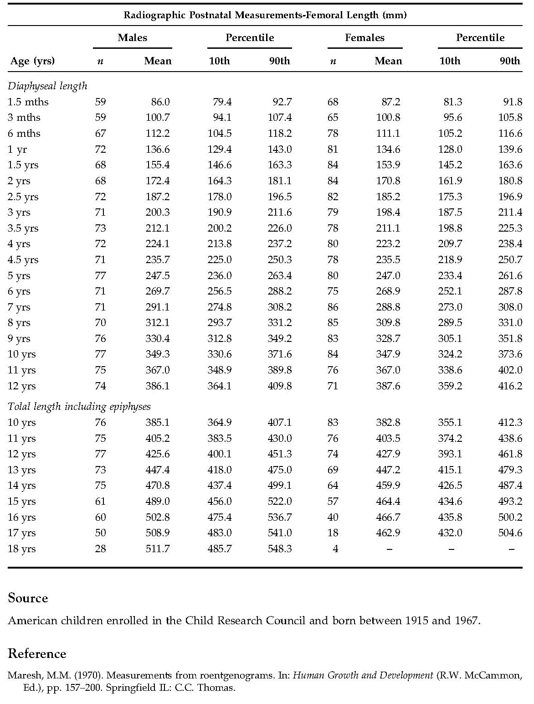

The erupted teeth are observed, the length of the root, the teeth in the alveolus but not erratic.
Written according to the chart below:

The length of the bones
HUMERUS

FEMUR

Physical activity
Musculoskeletal Markers
Musculoskeletal Markers (MSM) are analyzed according to the visual reference system initiated by Mariotti et al. (2004). The scoring system consists of four scores, attributed to the increase of MSM expression, in which 0 is attributed to the absence of markers, and 3 suggests a strong expression thereof. For missing bones, the score for those regions is 0. This method involves visual scoring giving descriptive examples, photographic images of varying degrees of MSM. The scores were scored on both sides, both straight and left
The analyzed bones are humerus, radius, ulna, clavicula, femur, tibia, fibula.What we are interested in is the place of insertion of different muscles. These can be found in the document below.
Some types of activities that could create MSM:
The presence of markers on the surface of the clavicle at the location of Deltoid and Pectoralis Major could be caused by activities such as throwing different objects (spear throwing).
At the humerus level, the presence of these three markers, Teres Major, Pectoralis Major, Latissimus Dorsi, suggests the following possible activities, responsible for stress at this level: flexion and repetitive extension of the arm.
If they only appear on a particular part of the body, it can be deduced whether the individual was either right-handed or left-handed.
At the radius level is a very small number of cases of MSM occurrence. Most often observed was in the insertion area of the Abductor muscle. This marker often appears to masonry, baker, water transport, or farmer.
At the insertion site of the Abductor and Brachialis muscles, the appearance of the MSM can be observed on the ulna surface. These markers developed into fur traders, those who used to travel by boat, hunters, and those involved in various battles.
If at the level of the femur we deal with Gluteus Maximus and Gastrocnemius, the activities aimed at the appearance of these MSM are skiing, riding, football, driving, activities that require stabilization of the hip under stress conditions.Also on the surface of the femur can be seen Linea Aspera. Its occurrence is encouraged by sea-related activities, fishing or driving habits.
Tibial can be seen Soleus, indicating a semi-flexed leg posture. Among the occupations that could trigger this marker marker would be the fur dealer who runs from one side to the other and transports heavy packages or driver